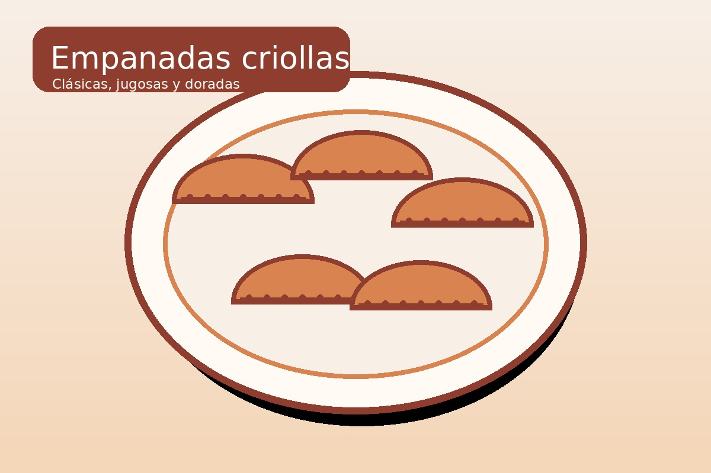
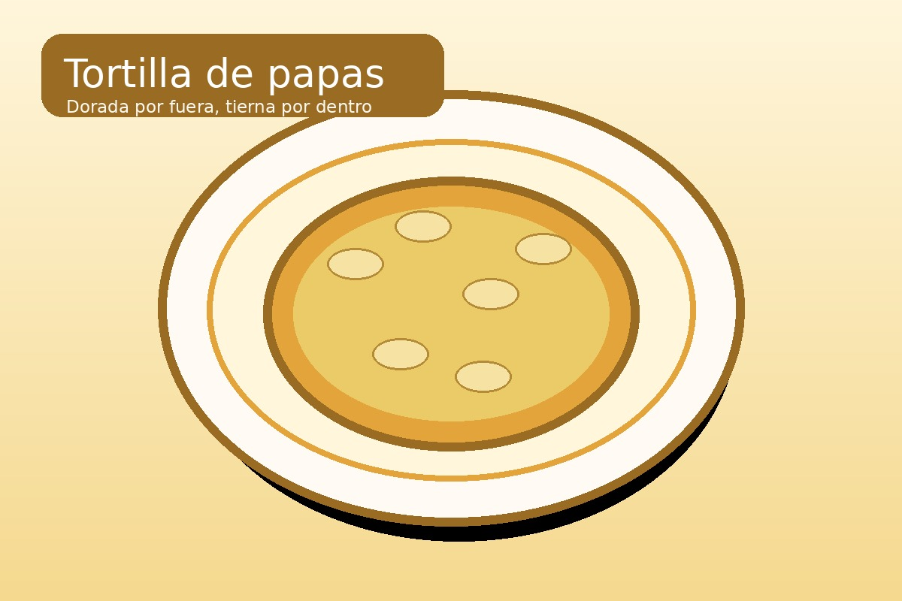

Recetas simples · sabor de casa
Cocinar rico también puede ser fácil.
Un recetario estático con propuestas saladas y dulces, pensado para encontrar rápido qué cocinar y descargar cada receta en PDF.
Dos categorías
Elegí según el antojo.
Platos salados para almuerzos y cenas, y recetas dulces para meriendas, postres o celebraciones.
🥘 SaladasEmpanadas, tortillas y opciones frescas para todos los días.
🍰 DulcesClásicos caseros, simples de preparar y perfectos para compartir.
📄 PDFs descargablesCada receta cuenta con su propio recetario en formato PDF.
Selección
Algunas recetas para empezar.
